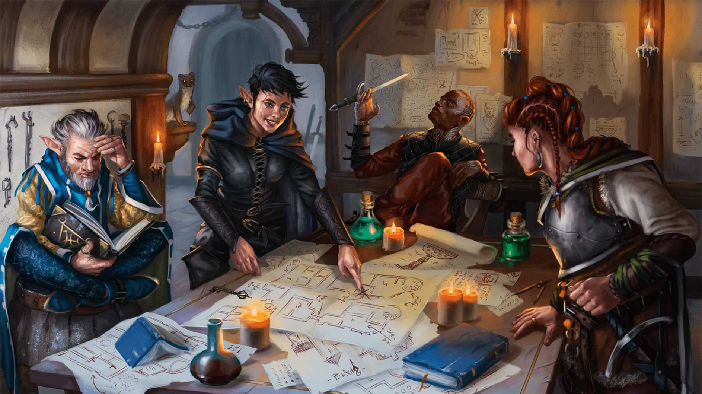

Characters in Dungeons and Dragons each have 1 or more class. Each class has its own perks and qualities that are unique.
| Class | Primary Ability | Hit Point Die | Saves |
|---|---|---|---|
| Barbarian | Strength | D12 | Strength & Constitution |
| Bard | Charisma | D8 | Dexterity & Charisma |
| Cleric | Wisdom | D8 | Wisdom & Charisma |
| Druid | Wisdom | D8 | Intelligence & Wisdom |
| Fighter | Strength & Dexterity | D10 | Strength & Constitution |
| Monk | Dexterity or Wisdom | D8 | Strength & Dexterity |
| Paladin | Strength & Charisma | D10 | Wisdom & Charisma |
| Ranger | Dexterity & Wisdom | D10 | Strength & Dexterity |
| Rogue | Dexterity | D8 | Dexterity & Intelligence |
| Sorcerer | Charisma | D6 | Constitution & Charisma |
| Warlock | Charisma | D8 | Wisdom & Charisma |
| Wizard | Intelligence | D6 | Intelligence & Wisdom |
Characters in Dungeons and Dragons also have a unique race. A character can have more than one race, but one is more standard. Each race also has its own perks and benefits.
Players will join together as "parties" in order to complete quests and follow a story line. A traditional party has around 4-6 members with a dungeon master who helps guide the campaign.
